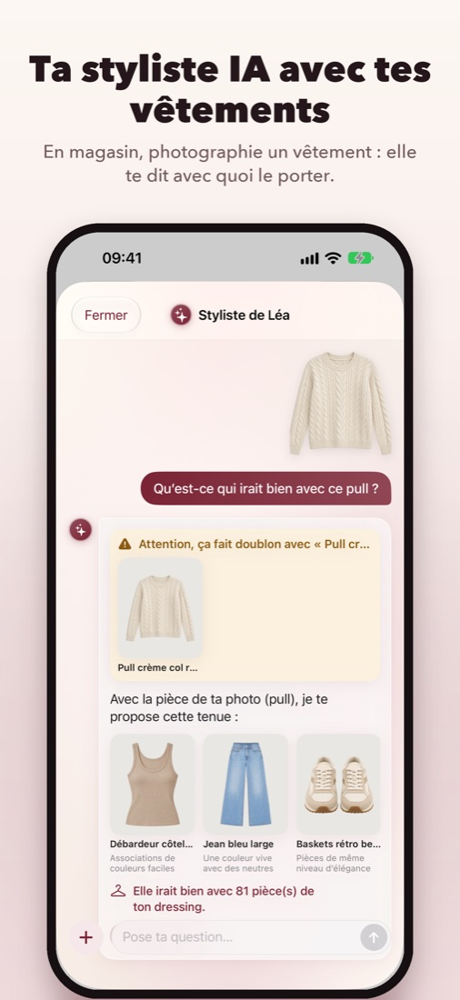
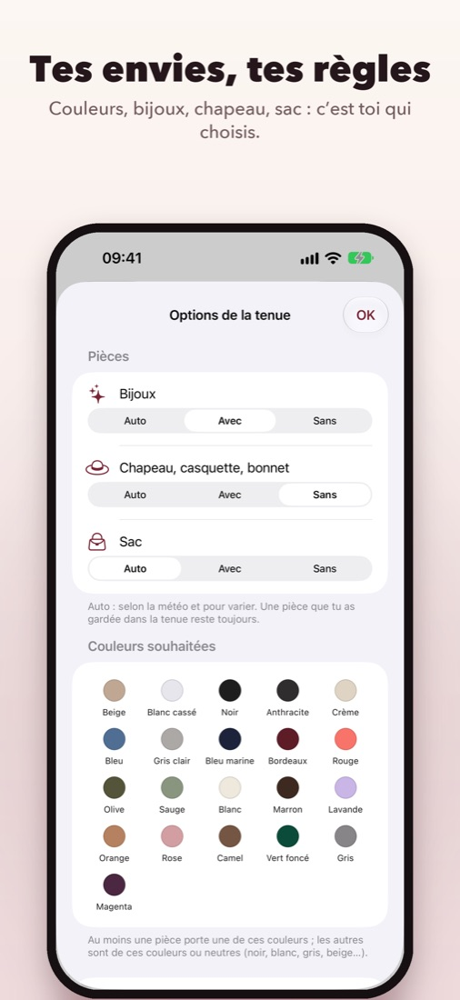
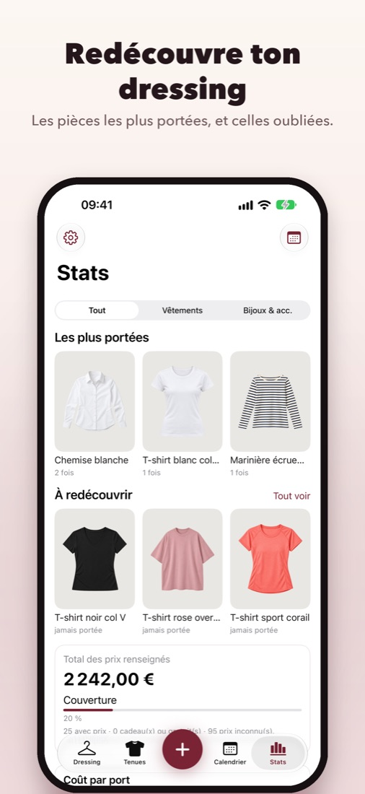
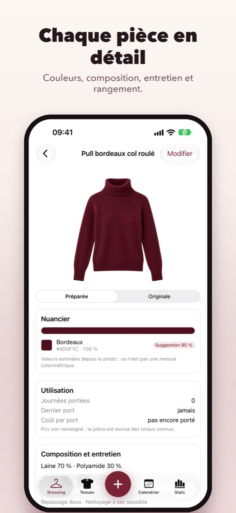

Ton dressing dans ton iPhone.
Photographie tes vêtements et tes bijoux, laisse ta styliste composer avec tes pièces, planifie ta semaine selon la météo et redécouvre ce que tu ne portes plus.
Bientôt sur l’App Store





Ta styliste IA, avec tes vêtements
Pose-lui une question, joins une photo ou une pièce de ton dressing : elle répond avec ce que tu as vraiment.
- En magasin, photographie un vêtement : elle compose une tenue avec tes pièces, te prévient si tu as déjà quelque chose de très proche, et te dit avec combien de pièces il irait.
- « Quelles chaussures avec ce pull ? » : trois propositions tirées de ton dressing, avec la raison de chacune.
- « Un pantalon noir va avec un haut rouge ? » : un avis clair, expliqué par tes règles de style.
Apple Intelligence l’aide à comprendre tes questions, sur ton iPhone. Ses réponses viennent de ton dressing et de tes règles : elle n’invente jamais de vêtement.
Ce que fait InspyDressing
Tes pièces en photo
Appareil photo guidé, détourage automatique, couleurs reconnues. Ou importe un vêtement acheté en ligne depuis la page de la boutique.
Des tenues selon la météo
Une tenue du jour adaptée au temps qu’il fait, et une nouvelle idée en secouant l’iPhone.
Tes règles de style
Associations de couleurs, imprimés, volumes, chaussures… Une trentaine de règles à activer, désactiver ou ajuster selon ton goût.
Tes envies du jour
Couleurs souhaitées ou à éviter, avec ou sans bijoux, chapeau ou sac.
Calendrier et ressenti
Planifie tes tenues avec la météo prévue, note ce que tu as porté, ajoute une photo de toi, partage tes looks.
Stats et redécouvertes
Pièces les plus portées, coût par port, vêtements oubliés, aide à la revente sur Vinted et ailleurs.
Entretien et rangement
Composition et symboles d’entretien de chaque pièce. Tes emplacements (commode, penderie, grenier…) avec leurs tiroirs et étagères.
Privé par défaut
Pas de compte, pas de publicité, pas de suivi. Tes photos et tes données restent sur ton iPhone.